Augments — Glossaire TFT Set 18
Riot ne publie pas quel augment un joueur a pris via l'API Match-V1 pour ce set (voir la note sur les fiches de comp) — cette liste est donc une référence statique, sans statistique de pick rate ou de winrate.
Argent 115
AFK
Vous ne pouvez faire aucune action pendant Rounds To Skip manches. Ensuite, vous gagnez Gold PO.
Optimisation optimisée
Votre prochaine optimisation sera d'un palier supérieur.
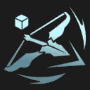
Arcs à gogo
Vous gagnez un Arc courbe. Après que vos champions ont attaqué Attack Count fois, vous obtenez en Num Bows de plus.
Bande de voleurs
Vous gagnez Amount Of Gloves At Start Gants de voleur.
Meilleurs amis I
Au début du combat, vos alliés adjacents à une seule autre unité gagnent AS% de vitesse d'attaque et Armor armure et résistance magique.
Ami trapu I
Vos alliés qui commencent le combat à côté d'un allié qui a plus de Required Health PV gagnent Damage Reduction Percent% de durabilité. Vous gagnez une Ceinture du géant.
Ligne de front
Votre équipe gagne Health Increase Per Front Liner PV pour chaque champion qui commence le combat sur la première rangée.
Aléatoire jacta est
Vous gagnez un emblème aléatoire.

Aléatoire jacta est+
Vous gagnez un emblème aléatoire et un Reforgeur.
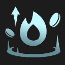
Victoire annoncée
Votre série de victoires passe à +Win Streak Count. Vous gagnez Gold PO.

Plus-values I
Vous emmagasinez un montant de PO équivalent aux intérêts que vous gagnez. À la manche Stage-Round, vous gagnez un montant de PO égal à Interest Ratio% des PO emmagasinées. Vous gagnez immédiatement Starting Gold PO.
Don du gardien
Vous gagnez immédiatement un champion à 2 PO aléatoire. Vous regagnez le même chaque fois que vous gagnez un niveau. Champion : 0
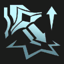
Glaives à gogo
Vous gagnez un BF Glaive. Lorsque vos champions ont infligé Physical Damage Until Completion pts de dégâts physiques, vous en gagnez Num Completion Rewards de plus.
Bénédiction céleste I
Votre équipe gagne Omnivamp I% d'omnivampirisme. L'excédent de soins est converti en un bouclier de jusqu'à Shield Max I PV.

Livraison de champion
Vous gagnez Num Initial Champs champions à Champ Cost PO. Après Delay manches, vous en obtenez Num Delayed Champs de plus.

Livraison de champion+
Vous gagnez Num Initial Champs champions à Champ Cost PO. Après Delay manches, vous en obtenez Num Delayed Champs de plus.
Livraison de champion++
Vous gagnez Num Initial Champs champions à Champ Cost PO. Après Delay manches, vous en obtenez Num Delayed Champs de plus.
Évolution chaotique
Augmenter le niveau d'étoiles d'un champion lui octroie l'un des éléments suivants : Health PV, Durability% de durabilité, AP de puissance, AD% de dégâts d'attaque, Attack Speed% de vitesse d'attaque. Bonus cumulables.
Transfert I
Votre équipe gagne Damage Amp% d'amplification des dégâts. Overkill Percent% des dégâts excédentaires sont infligés à l'ennemi le plus proche sous forme de dégâts magiques.
Connivence I
Chaque fois qu'un allié meurt, les alliés qui partagent au moins un type avec lui gagnent Bonus AP% de puissance, Bonus AD% de dégâts d'attaque, Bonus Armor d'armure et Bonus MR de résistance magique.
Charge cognitive
Vous gagnez Num Gold PO et Num Xp XP.

Charge cognitive+
Vous gagnez Num Gold Plus PO et Num Xp Plus XP.
Buffet de composants
Chaque fois que vous devriez gagner un composant, vous gagnez une Enclume à composants à la place. Vous gagnez un composant aléatoire. L'enclume offre 4 choix.
Baguettes à gogo
Vous gagnez une Baguette trop grosse. Lorsque votre équipe a infligé Stacks For Reward pts de dégâts magiques, vous en gagnez Num Delayed de plus. Dégâts infligés : @TFTUnitProperty.item:TFT_Augment_ComponentQuest_Tracker@
Corrosion
Les ennemis sur les deux premières rangées perdent Resist Loss d'armure et de résistance magique toutes les Time sec.
Maîtrise de l'artisanat
Chaque fois que vous fabriquez un objet complet, vous gagnez Num Free Rerolls relances.
Départ différé
Vous vendez tous les champions sur votre plateau et sur votre banc. Vous gagnez Num Units champions 2 étoiles à tier PO aléatoires. Votre boutique est inaccessible pendant les roundstoskip prochaines manches.
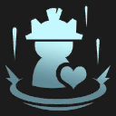
Mannequinification
Vous perdez tous les champions sur votre plateau et sur votre banc. Vous gagnez un Mannequin d'entraînement doté de Combined Health Percentage% de leurs PV combinés. Le mannequin gagne Health Gain Per Stage PV par phase. Vous gagnez un champion 2 étoiles à 2 PO non tank aléatoire.
Carrousels améliorés
Pendant les Num Stages prochains carrousels, vous gagnez une deuxième copie du champion que vous avez pris pendant le carrousel. Vous gagnez immédiatement Gold PO.
Électrocharge I
À chaque fois qu'un allié subit Proc Attack Count attaques, il inflige Damage I-Damage I_4 pts points de dégâts magiques (selon la phase) aux ennemis proches (délai de récupération de Cooldown sec).
Exilés I
Vos champions qui commencent le combat sans champion adjacent gagnent un bouclier de Max Health Shield% de leurs PV max pendant Shield Duration sec.
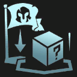
Expédition
Au début de chaque manche, vous perdez le champion se trouvant le plus à droite sur votre banc. Après avoir perdu Cashout Cost PO de champion de cette manière, vous gagnez une récompense puissante. Vous gagnez immédiatement un champion à 3 PO.
Boucles supplémentaires
Vous gagnez une Ceinture du géant. Lorsque vos champions ont subi Damage Taken Req pts de dégâts, vous en gagnez Num Cashout Loot de plus.

Composants funéraires
Tous les Ally Deaths champions alliés qui meurent, vous gagnez un composant aléatoire (max Num Components). Morts restantes : @TFTUnitProperty.item:TFT_Augment_EyeForAnEyeDeaths@.
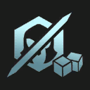
Composants funéraires+
Vous gagnez un composant aléatoire. Tous les Ally Deaths champions alliés qui meurent, vous gagnez un autre composant (max Num Components). Morts restantes : @TFTUnitProperty.item:TFT_Augment_EyeForAnEyeDeaths@.
Vous vous sentez en veine ?
Vous gagnez Gold Up Front PO, puis tirez à pile ou face. Si vous tombez sur face, vous gagnez Gold If Heads PO en plus.
Centre d'excellence
Votre champion qui commence le combat au centre de la première rangée gagne +Damage Amp Percent% d'amplification des dégâts et Max Health Multiplier% de PV max.
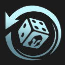
Cleptomanie
À chaque manche, vous volez un champion aléatoire valant Cost Limit PO ou moins dans la boutique. Vous gagnez Gold PO.

Tout feu tout flamme
Le champion Infernal qui a infligé le plus de dégâts lors du précédent combat est en feu et gagne AS% de vitesse d'attaque. Vous gagnez un Varus et une Akali.
Larmes à gogo
Vous gagnez une Larme de la déesse. Lorsque vos champions ont dépensé Completion Mana Required pts de mana, vous en gagnez Completion Num Rewards de plus.
Feu concentré
Votre équipe gagne AD% de dégâts d'attaque. Toutes les Timer sec, elles en gagnent Stack AD% de plus.

Ami sur mesure
Le prochain champion à Unit Cost PO que vous achetez sera Actor Level étoiles. Vous gagnez Num Gold PO.

Ami sur mesure
Le prochain champion à 1 PO que vous achetez sera 3 étoiles. Vous gagnez Gold PO.

Investissement pour le futur
Votre Tacticien perd Health Loss PV, mais après Num Rounds combats contre un joueur, vous gagnez Num Champions champions à 4 PO et Reward Gold PO.
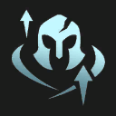
Canon de verre I
Les alliés commençant le combat sur la dernière rangée commencent le combat avec Starting HP% de leurs PV, mais ils gagnent Damage Amp% d'amplification des dégâts.
Butin funéraire I
Les champions sans objets ont Change Drop% de chances de générer Gold Reward PO en mourant.
Câlin collectif I
Début du combat : les champion octroient aux champion adjacents Armor_Silver d'armure et de résistance magique. Cet effet est cumulable.
Orbes de soins I
Lorsqu'un ennemi meurt, un allié proche récupère Health From Healing Orb Silver PV.
Entre les PO et l'enclume
Vous gagnez une Enclume à composants et Num Coins PO.
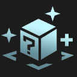
Collectionneur d'objets I
Pour chaque objet unique qu'elles portent, vos unités gagnent AD% dégâts d'attaque et AP% de puissance.
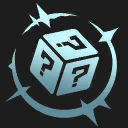
Sac de butin
Vous gagnez Num Items objet complet aléatoire.

Sac de butin I
Vous gagnez un objet complet aléatoire.
Sentinelles I
Début du combat : vos unités avec des alliés adjacents gagnent un bouclier de Shield Health PV pendant Shield Duration sec. Ce bouclier est cumulable.
Coup d'envoi
Vous gagnez un champion aléatoire à Champ Cost PO Star Level étoile et Num Gold PO.
Régicide
Après avoir gagné un combat contre un joueur, vous gagnez Base Gold After Combat PO. Si ce joueur avait plus de PV que vous, vous gagnez Modified Gold After Combat PO à la place. Vous gagnez Initial Gold PO.
Spécialiste des fins de partie
Quand vous atteignez le niveau Level Req, vous gagnez Num Gold PO.
Forge à retardement
Après Wait Rounds combats contre un joueur, vous gagnez une Enclume à artefacts.
Première ligne
Votre équipe gagne Resistances d'armure et de résistance magique par allié qui commence le combat sur les 2 premières rangées.
Partage à retardement
Les alliés qui commencent sur les deux dernières rangées se partagent un total de Mana mana après Delay Seconds sec de combat.

Dé pipé
Votre dé et vos pièces sont plus chanceux. Lancez un dé et gagnez autant de PO que le résultat obtenu. Lancez ensuite une pièce et gagnez Gold PO si elle tombe sur face.
Le prix du sang
Vous gagnez Gold PO tous les Damage pts de dégâts que vous infligez à des Tacticiens ennemis. Gains totaux : @TFTUnitProperty.item:TFT11_BloodBankPayoutTotal@ PO
Armure improvisée I
Vos champions sans objet gagnent Armor_Silver d'armure et de résistance magique.
Palier 1
Vous gagnez un exemplaire de chaque champion à 1 PO.
Relances étoilées
Quand vous augmentez le niveau d'étoiles d'un champion que vous avez placé sur votre plateau lors du dernier combat, vous gagnez Num Rolls relances gratuites de la boutique. Vous gagnez Gold PO.
Un, deux, trois
Vous gagnez tier1champs champion(s) à 1 PO, numchamps champion à 2 PO et 1 champion à 3 PO.
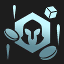
Butin aléatoire
Vous obtenez 1 composant aléatoire, Gold PO et 1 champion à 5 PO aléatoire.

Uns, deux, trois
Vous gagnez One Costs champions à 1 PO, Two Costs champion à 2 PO et Three Costs champion à 3 PO.
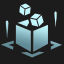
Encombrement
Pendant la phase active, il n'y a que Bench Slots emplacements sur votre banc. Ensuite, vous gagnez Components composants.
Banc de Pandore
Au début de chaque manche, les champions des Num Bench Slots emplacements les plus à droite de votre banc se transforment en champions aléatoires du même coût. Vous gagnez Gold Gain PO.
Objets de Pandore
Début de la manche : les objets sur votre banc changent aléatoirement. Vous gagnez Num Components composant aléatoire.

Objets de Pandore I
Début de la manche : les objets sur votre banc changent aléatoirement. Vous gagnez Number Of Components I composant aléatoire.
Ascension partielle
Après Activation Delay sec de combat, vos unités gagnent Damage Amp% d'amplification des dégâts.
Jeu de patience
Vous gagnez Rerolls Upfront relances immédiatement. À chaque manche, vous gagnez Rerolls relance gratuite si vous n'avez pas acheté de champion lors de la manche précédente.

Jeu de patience
Vous gagnez Initial Rerolls relances immédiatement. À chaque manche, vous gagnez Free Rerolls relance(s) gratuite(s) si vous n'avez pas acheté de champion lors de la manche précédente.

Placébo
Vos unités gagnent +Attack Speed% de vitesse d'attaque. Vous gagnez Gold PO.
Placébo+
Vos unités gagnent +Attack Speed% de vitesse d'attaque. Vous gagnez Gold PO.
Recombobulateur de poche
Vous gagnez Num Recombobulator Recombobulateurs de poche, un consommable qui vous permet de transformer un champion à 1 PO ou 2 PO pour en faire un champion qui coûte 1 PO de plus. Le champion garde son niveau d'étoile. Vous gagnez également Num Reforgers Reforgeurs.
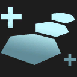
Préparation I
Les champions sur votre banc gagnent définitivement HP Bonus PV, Stats% de dégâts d'attaque et Stats% de puissance par manche. Cet effet peut se cumuler jusqu'à Max Stacks fois et les champions commencent avec Starting Stacks effet.
Toujours plus vite I
Votre équipe gagne Base AS% de vitesse d'attaque. Après chaque manche, elles en gagnent Increase Per Round% de plus. (Vitesse d'attaque actuelle : @TFTUnitProperty.item:TFT9_PumpingUpRounds@%)

Séries rapides
Vos séries de victoires et de défaites progressent deux fois plus vite. Vous gagnez Gold PO.
Recombobulateur
Les champions sur votre plateau se transforment définitivement en champions aléatoires du palier de coût supérieur (max 5 PO). Vous gagnez Num Removers Suppresseurs magnétiques et Num Rolls relances.
Recyclage de relances
Toutes les Augment Reroll Tracked relance(s) d'optimisation(s) non utilisée(s), vous gagnez Shop Reroll To Grant relances de la boutique gratuites. Vous gagnez Gold PO. Cela n'inclut pas la manche pendant laquelle cette optimisation a été sélectionnée.

Magie résiduelle
Votre équipe gagne Initial Health PV. Chaque fois que vous achetez un esprit de la forêt, ce bonus est augmenté de Health Per Sprite.

Magie résiduelle+
Votre équipe gagne Initial Health PV. Chaque fois que vous achetez un esprit de la forêt, ce bonus est augmenté de Health Per Sprite.

Magie résiduelle++
Votre équipe gagne Initial Health PV. Chaque fois que vous achetez un esprit de la forêt, ce bonus est augmenté de Health Per Sprite.
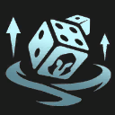
Nouveau départ
Vous supprimez tous les champions sur votre plateau et sur votre banc. Vous gagnez 3 Cost champions 2 étoiles à 3 PO, 2 Cost champions 2 étoiles à 2 PO et 1 Cost champion 2 étoiles à 1 PO aléatoires.
Boutique truquée+
Pour votre prochaine boutique et toutes les Num Rolls boutiques ensuite, seuls des champions à 3 PO seront proposés. Vous gagnez Rerolls relances.
L'amour du risque
Votre Tacticien perd Health PV, mais après Player Combat Num combats contre un joueur, vous gagnez Gold PO.
Jour de relance
Vous gagnez Num Free Rerolls relances gratuites de la boutique.

Jour de relance I
Vous gagnez Numrolls relances gratuites de la boutique.
Second souffle
Après Delay sec de combat, votre équipe récupère Heal Percent% de ses PV manquants.

Destin argenté
Vous gagnez une optimisation de palier Argent aléatoire et Gold PO.
Destin argenté+
Vous gagnez une optimisation de palier Argent aléatoire et Gold PO.

Destin argenté++
Vous gagnez une optimisation de palier Argent aléatoire et Gold PO.
Par ici l'XP
Vous gagnez XP XP.
Question de taille
Vous gagnez une Ceinture du géant. La première fois qu'un champion commence un combat avec plus de Health Required PV max, vous gagnez une Armure de Warmog.
Crescendo aléatoire
Deux fois par phase, vous gagnez un champion aléatoire. Son coût augmente à chaque phase. Cet effet prend fin une fois que vous avez reçu Num Of Max Costs champion à Max Champ Cost PO.
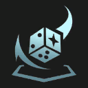
Dés légèrement magiques
Vous lancez un dé. Vous gagnez des récompenses en fonction du numéro.
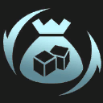
Petit sac de butin
Vous gagnez Number Of Components composant d'objet aléatoire.
Butin de guerre I
Les ennemis ont Loot Drop Chance% de chances de lâcher du butin à leur mort.
Soutien indéfectible
Vos unités gagnent Attack Damage Percentage Per Trait% de dégâts d'attaque et Ability Power Per Trait% de puissance par type non unique actif dans votre équipe.
Survivant
Vous gagnez Initial Gold PO. Après l'élimination de Players Dead joueurs, vous gagnez Gold PO de plus.
Rebuts
Après les Num Stages prochains carrousels, vous gagnez un champion qui n'a pas été sélectionné et son objet. Vous gagnez Gold PO.
Esprit d'équipe
Vous gagnez un Duplicateur de champion mineur. Après Player Rounds combats contre un joueur, vous en gagnez un autre. Cet objet vous permet de copier un champion à 3 PO ou moins.
Cours de soutien
Vous gagnez Num Components composant aléatoire, et Num Champs champions à 3 PO aléatoires.
La Tour
Vous gagnez un Mannequin d'entraînement géant. Toutes les Tower Attack Interval sec, le mannequin frappe les Tower Num Targets ennemis les plus proches, infligeant Max Health Damage Multiplier% de ses PV max en dégâts bruts.
P'tits titans
Vos PV de Tacticien actuels et max augmentent de heal.
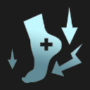
Liberté conditionnelle
Vos PV de Tacticien actuels et max augmentent de Heal. Pendant les carrousels, vous êtes libéré·e plus tôt, mais vous êtes beaucoup plus lent·e.
Gardiens jumeaux
Si vous avez exactement Num Multiples alliés sur votre première rangée, ils gagnent Bonus Health PV, Armor Instant d'armure et Magic Resist Instant de résistance magique.
Outsiders
Quand votre équipe compte moins d'alliés vivants que celle de votre adversaire, elle récupère Missing Heal% de ses PV manquants par seconde (max : Heal Cap).
Vitalité vampirique I
Vous récupérez des PV de Tacticien équivalents à Omnivamp% des dégâts que vous infligez aux Tacticiens ennemis. Votre équipe gagne Omnivamp Stat Bonus% d'omnivampirisme.

Verticalité I
Les champions gagnent ADAP% de dégâts d'attaque, ADAP% de puissance, resists d'armure et resists de résistance magique pour chaque allié partageant un type avec eux.

Esprits en solde
Chaque fois que vous achetez un esprit de la forêt, vous gagnez Gold PO. Vous gagnez immédiatement Starting Gold PO.

Esprits en solde+
Chaque fois que vous achetez un esprit de la forêt, vous gagnez Gold PO. Vous gagnez immédiatement Starting Gold PO.
Liberté !
Vous pouvez toujours vous déplacer librement lors des phases de carrousel. Vous gagnez Instant Gold PO.
Or 193
Quête dorée
La première fois que vous avez au moins Gold Required PO, vous gagnez un champion 2 étoiles à 5 PO et 2 objets adaptés.

Dés magiques
Lancez 3 dés. Vous gagnez des récompenses en fonction de leur résultat total. Récompense : @TFTUnitProperty.item:TFT_Augment_MagicRoll@
Boules de cristal
Récupérez des boules de cristal en gagnant des combats contre un joueur. Récupérer Wins Per Reward boules vous donne une récompense. Vous pouvez ensuite recommencer cette mission pour plus de récompenses. Vous commencez avec un champion 2 étoiles à 1 PO.
Prêt anticipé
Vous gagnez Gold Instant Basic PO. Votre prochaine optimisation sera d'un palier inférieur.

Prêt anticipé+
Vous gagnez Gold Instant Plus PO. Votre prochaine optimisation sera d'un palier inférieur.
Visez le sommet !
Vous combattez plus souvent des joueurs plus forts, et vous savez qui est votre prochain adversaire. À chaque défaite, vous gagnez XP XP. À votre première victoire et toutes les Wins Per Component victoires suivantes, vous gagnez un composant. Ennemis vaincus : @TFTUnitProperty.item:TFT15_AimForTheTop_EnemiesBeaten@
Tout ce qui brille
Choisissez un artefact générateur de PO et gagnez un Suppresseur magnétique.

Tout ce qui brille+
Choisissez un artefact générateur de PO. Vous gagnez un Suppresseur magnétique et Gold Granted PO.
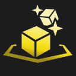
Un autre !
Le prochain objet complet que vous créez vous octroie une copie supplémentaire de celui-ci. Vous gagnez immédiatement Gold PO.

Un autre !+
Le prochain objet complet que vous créez vous octroie une copie supplémentaire de celui-ci. Vous gagnez Num Components Enclume à composants.
Arcaniquement Viktor-ieux
Après Initial Stun Delay In Seconds sec de combat, l'équipe ennemie est étourdie pendant Stun Duration secondes. L'effet se répète après Repeat Stun Delay In Seconds sec de combat. TFT Macao Open 2024
Ascension
Après Activation Delay sec de combat, vos unités gagnent Damage Amp% d'amplification des dégâts.
Patience
Vous gagnez un champion Star Level étoiles à 5 PO, équipé d'un objet recommandé. Vous ne pouvez pas le placer sur le plateau avant la phase Unlock Stage-Unlock Round.
Stratégie de ligne arrière
Vous gagnez un champion non tank à 3 PO ainsi qu'un emblème correspondant à sa classe.
Soutien du banc
Début du combat : toutes les Period sec, les champions sur vos Bench Slots emplacements les plus à droite de votre banc octroient à votre équipe Attack Speed Per Unit% de vitesse d'attaque par emplacement.

Bête intérieure
Primitif octroie une bénédiction supplémentaire. Vous gagnez une Vi immédiatement et une Sivir après Augment Round Delay manches.

Bête intérieure+
Primitif octroie une bénédiction supplémentaire. Vous gagnez une Vi et une Sivir.
Meilleurs amis II
Au début du combat, vos alliés adjacents à une seule autre unité gagnent AS% de vitesse d'attaque et Armor armure et résistance magique.
Ami trapu II
Vos alliés qui commencent le combat à côté d'un allié qui a plus de Required Health PV gagnent Damage Reduction Percent% de durabilité. Vous gagnez une Ceinture du géant.
Super sac de butin
Vous gagnez 3 composants aléatoires, Gold PO et 1 Reforgeur.
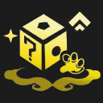
Réunion d'anniversaire
Vous gagnez un champion aléatoire à First Reward Shop Tier PO Champ Level étoile. Au niveau Middle Reward Level, vous gagnez un composant aléatoire. Au niveau Last Reward Level, vous gagnez un champion aléatoire à Last Reward Shop Tier PO Champ Level étoile. Tactician's Crown de Légendes des encres, 2024
Âme ardente I
Début du combat : votre champion qui a la vitesse d'attaque la plus élevée gagne Ability Power% de puissance et Attack Speed% de vitesse d'attaque. L'effet se répète sur un autre allié toutes les Transfer Duration sec.
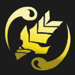
Offrande sanguinaire
Vous gagnez une Soif-de-sang. Début du combat : les alliés portant une Soif-de-sang perdent HP Loss Percent% de leurs PV, mais gagnent un bouclier de HP Shield Percent% de leurs PV et Bonus AD% de dégâts d'attaque et de puissance.
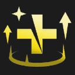
Rage sanglante
Vos alliés gagnent Base Damage Amp-Damage Amp Cap% d'amplification des dégâts en fonction de leurs PV manquants. Amplification des dégâts max atteinte à Missing Health Cap% de PV.

Appel de la floraison
Lorsque vous achetez un esprit de la forêt, vous gagnez un champion Fleur spirituelle aléatoire selon le coût de l'esprit de la forêt. Vous gagnez une Yunara, un Yorick et une Karma.
Formation de Garde du corps
Les alliés gagnent Armor Bonus d'armure et de résistance magique, augmenté de Player Level Bonus par niveau de Tacticien. Championnat Gadgets en folie, 2022

Cadeau bonus
Chaque fois que vous ouvrez un orbe de butin, vous avez Chance% de chances d'obtenir un orbe de butin gris. Vous gagnez Starting Orbs orbes de butin gris.

Cadeau bonus+
Chaque fois que vous ouvrez un orbe de butin, vous avez Chance% de chances d'obtenir un orbe de butin gris. Vous gagnez Starting Orbs orbes de butin gris.

Booster
Vous gagnez l'équivalent de Combined Champs Value Normal PO en champions aléatoires. (Vous êtes sûr de gagner au moins un champion à Guaranteed Champ Value Normal PO.)
Booster+
Vous gagnez l'équivalent de Combined Champs Value Plus PO en champions aléatoires. (Vous êtes sûr de gagner au moins un champion à Guaranteed Champ Value Plus PO.)

Booster++
Vous gagnez l'équivalent de Combined Champs Value Plus Plus PO en champions aléatoires. (Vous êtes sûr de gagner au moins un champion à Guaranteed Champ Value Plus Plus PO.)
Bronze pour la vie I
Votre équipe gagne Damage Amp% d'amplification des dégâts pour chaque type au palier Bronze.
Défaite planifiée
Après avoir perdu un combat, vous obtenez Gold PO et une relance gratuite de la boutique.

Plus-values II
Vous emmagasinez un montant de PO équivalent aux intérêts que vous gagnez. À la manche Stage-Round, vous gagnez un montant de PO égal à Interest Ratio% des PO emmagasinées. Vous gagnez immédiatement Starting Gold PO.
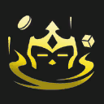
Ravitaillement
Maintenant et au début des prochaines Num Stages phases, vous recevez un colis de ravitaillement contenant du butin et Gold PO.
Faveur du gardien
Vous gagnez une Enclume à composants quand vous atteignez les niveaux 5, 6, 7 et 8. Les Enclumes à composants offrent 4 choix.
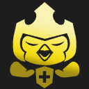
Bénédiction céleste II
Votre équipe gagne Omnivamp II% d'omnivampirisme. L'excédent de soins est converti en un bouclier de jusqu'à Shield Max II PV.
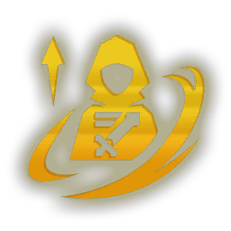
Grâce du Challenger
Au début du combat, vos alliés gagnent Attack Speed Multiplier% de vitesse d'attaque pendant Buff Duration sec. Lorsqu'ils participent à une élimination, vos alliés se ruent vers leur prochaine cible et gagnent à nouveau ce bonus.
Transfert II
Votre équipe gagne Damage Amp% d'amplification des dégâts. Overkill Percent% des dégâts excédentaires sont infligés à l'ennemi le plus proche sous forme de dégâts magiques.
Élue du soleil
Vous gagnez une Leona, une Kayle et une Sejuani. Leona gagne Flat Health PV max permanents à chaque manche, augmentés de Health Per Three Star pour chaque champion 3 étoiles unique déployé.
Lucidité
S'il n'y a aucun champion sur votre banc à la fin d'un combat contre un joueur, vous gagnez XP Gain XP.
Connivence II
Chaque fois qu'un allié meurt, les alliés qui partagent au moins un type avec lui gagnent Bonus AP% de puissance, Bonus AD% de dégâts d'attaque, Bonus Armor d'armure et Bonus MR de résistance magique.
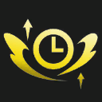
Accélérateur mécanique
Votre équipe gagne Attack Speed% de vitesse d'attaque toutes les Frequency Seconds sec de combat.
Clonage
Renforce l'hexagone au centre de la troisième rangée. Vous invoquez un clone du champion qui s'y trouve. Ce clone a Health Percent% de ses PV de base et un coût en mana augmenté de Mana Percent%.
Esprit encombré
Vous gagnez instantanément Num Champs champions à Cost Champs PO. Si votre banc est plein à la fin d'un combat contre un joueur, vous gagnez XP Gain XP.
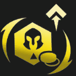
Surcharge cognitive
Vous gagnez Num Gold PO, Num Champ champion à Champ Cost PO Champ Level étoile(s), Num Champ2 champion à Champ Cost2 PO, Num Champ3 champions à Champ Cost3 PO, Num XP XP et Num Rerolls relances de boutique.

Achat 3 étoiles
Le prochain champion à Unit Cost PO que vous achetez sera Actor Level étoiles. Vous gagnez Num Gold PO.

Flore vorace
Vous gagnez un Emblème de Flora fatalis. Le porteur bénéficie du double des effets de Flora fatalis. Vous gagnez Gold PO.
Chefs cuisiniers
Au début de chaque manche, tous vos alliés équipés d'un objet de Poêle à frire ou d'un objet de Spatule octroient définitivement Health Increase PV au champion le plus proche. Vous gagnez une Poêle à frire.
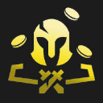
Réinitialisation cosmique
Invoquez les dieux pour vendre toutes les unités sur votre plateau et votre banc. Vous gagnez Emblems emblèmes aléatoires et Rerolls relances gratuites de la boutique.

Acolyte de l'Assemblée
Lorsque vous choisissez de continuer à collecter de l'essence d'Assemblée, vous récupérez Health PV de Tacticien. Vous gagnez une Camille, une Elise et une Caitlyn.
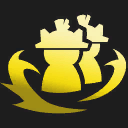
Mannequins de choc
Vous gagnez Numdummies Mannequins d'entraînement. Début du combat : vos Mannequins se lancent vers un groupe d'ennemis et les étourdissent pendant stun sec.
Volonté de la couronne
Vous gagnez une Baguette trop grosse et une Cotte de mailles. Votre équipe gagne AP puissance et Armor d'armure.
Océan de larmes
Vous gagnez une Larme de la déesse. Votre équipe gagne Regen Bonus de régénération de mana. Après Upgrade Delay sec de combat, ce bonus augmente à Upgraded Regen Bonus.
Implants cybernétiques
Vos champions équipés d'un objet gagnent HP From Gold PV et AD From Gold% de dégâts d'attaque. Vous gagnez un BF Glaive.
Liaison cybernétique
Les champions équipés d'un objet gagnent HP From Gold PV et Mana Regen From Gold de régénération de mana. Vous gagnez une Larme de la déesse.

Sombre rituel
Convertir l'essence de l'Assemblée en récompenses confère aux champions de l'Assemblée de la puissance au lieu du butin. Vous gagnez une Camille, une Elise et une Caitlyn.
Doublure
Si vous avez exactement 2 exemplaires d'un champion sur le plateau, ils gagnent tous les deux Damage Stat Add% de dégâts d'attaque et de puissance, ainsi que Defense Stat Add d'armure et de résistance magique. Quand vous faites passer une unité à 3 étoiles, vous en gagnez une copie 2 étoiles.
Aléatoirement vôtre
Vous gagnez 2 champions à 5 PO aléatoires et 2 copies d'un composant aléatoire.
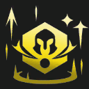
Leçons de combat
Votre équipe gagne Initial Stacks% de dégâts d'attaque et de puissance. Augmente de Stacks Per Combat% après chaque combat contre un joueur. Le bonus est doublé sur les champions à 1 PO.
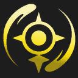
Électrocharge II
À chaque fois qu'un allié subit Proc Attack Count attaques, il inflige Damage II-Damage II_4 pts points de dégâts magiques (selon la phase) aux ennemis proches (délai de récupération de Cooldown sec).

Agrandissement
Les fées du type Fæ sont désormais plus grandes et octroient Bonus Multiplier% de dégâts d'attaque et de puissance supplémentaires. Les Fæs gagnent immédiatement Upfront ADAP% de dégâts d'attaque et puissance. Vous gagnez une Xayah et un Rakan.
Relances épiques
Lorsque vous atteignez le niveau Level, vous gagnez Rerolls relances de boutique. Championnat de Runeterra reforgée, 2023

Cycle épique
Maintenant et au début de chaque phase, vous gagnez Epoch XP XP et Epoch Rerolls relances gratuites.
Cycle épique+
Maintenant et au début de chaque phase, vous gagnez Epoch Plus XP XP et Epoch Plus Rerolls relances gratuites.
Étoiles filantes
Vos champions infligent des dégâts bruts équivalents à Base Percent True Damage% de leurs dégâts pour chaque niveau d'étoile.

Coup de chance
Vous gagnez un Coffre chanceux, un Suppresseur magnétique et Gold PO.
Exilés II
Vos champions qui commencent le combat sans champion adjacent gagnent un bouclier de Max Health Shield% de leurs PV max pendant Shield Duration sec.

Croissance explosive
Vous gagnez XP Per Round XP immédiatement et au début des Rounds prochaines manches.
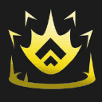
Croissance explosive+
Vous gagnez XP Per Round_Plus XP immédiatement et au début des Rounds prochaines manches.

Quatre équipé
Vous gagnez un champion à 4 PO aléatoire. Votre équipe gagne Health PV pour chaque objet équipé sur ce champion.
Allumer le feu
Vous gagnez une Cape solaire. Votre équipe gagne Omnivamp% d'omnivampirisme lorsqu'elle attaque des ennemis brûlés.
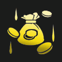
Investissement sur le futur
Vous perdez toutes vos PO. Après Rounds combats contre un joueur, vous regagnez le montant perdu, plus Base Gold PO. PO à venir : @TFTUnitProperty.item:TFT_Augment_ForwardThinkingGold@.
Fondation de première ligne
Vous gagnez un champion tank 2 étoiles à 1 PO ainsi qu'un emblème correspondant à sa classe.
Adaptation totale
Vous gagnez un Casque adaptatif. Les champions équipés de cet objet gagnent les deux effets.

Gain de 21 PO
Vous gagnez Num Gold PO.
@Gold@ PO
Vous gagnez Gold PO.
Acier doré
Vous gagnez 2 champions à 5 PO. Si vous placez au moins un champion à 5 PO sur le plateau, vos champions de 1 à 4 PO gagnent Durability% de durabilité. Tactician's Crown du set K.O. Coliseum, 2025
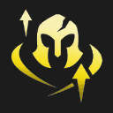
Canon de verre II
Les alliés commençant le combat sur la dernière rangée commencent le combat avec Starting HP_Gold% de leurs PV, mais ils gagnent Damage Amp_Gold% d'amplification des dégâts.

Destin doré+
Vous gagnez une optimisation de palier Or aléatoire et Gold PO.
Destin doré+
Vous gagnez une optimisation de palier Or aléatoire et Gold PO.
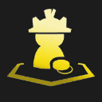
Mannequins rentables
Vous gagnez un mannequin d'entraînement. Toutes les Gold Duration sec, tous vos mannequins d'entraînement vous octroient Gold Amount PO.
Golemification
Vous perdez tous les champions sur votre plateau et sur votre banc. Vous gagnez un golem doté de Health Percent% de leurs PV combinés et de AD Percent% de leurs dégâts d'attaque combinés. Le golem gagne HP Per Stage PV par phase. Vous gagnez un champion non tank 2 étoiles à Champ Cost PO.
Câlin collectif II
Début du combat : les champion octroient aux champion adjacents Armor_Gold d'armure et de résistance magique. Cet effet est cumulable.
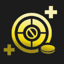
Carrousels trafiqués
Vous ne pouvez pas choisir vos récompenses lors des carrousels. Vous gagnez Player Health PV de Tacticien bonus et Gold PO à chaque carrousel. Lorsque vous ne choisissez pas de récompense de carrousel, vous recevez un champion non sélectionné et l'objet qu'il porte.
Orbes de soins II
Lorsqu'un ennemi meurt, un allié proche récupère Health From Healing Orb Gold PV.
Cœur d'acier
Vous gagnez un Cœur intrépide. Toutes les Survive Period In Seconds sec de combat auxquelles son porteur survit, le Cœur intrépide gagne Max Health Gain PV max permanents supplémentaires.
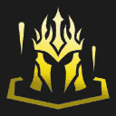
Lourde est la couronne
Vous gagnez une Couronne de Demacia, qui octroie d'importants bonus à son porteur. Si le porteur est éliminé, vous perdez le combat.
Relances imposantes
Votre équipe gagne Health PV et grandit à chaque fois que relancez pendant la partie. Vous gagnez Gold PO. Relances : @TFTUnitProperty.Item:TFT_Augment_HeftyRolls_NumRolls@. PV : @TFTUnitProperty.Item:TFT_Augment_HeftyRolls_HealthBonus@.

Besace héroïque
Vous gagnez 2 Duplicateurs de champion mineurs. Vous gagnez Gold PO.

Besace héroïque+
Vous gagnez 2 Duplicateurs de champion mineurs. Vous gagnez Gold PO.
Besace héroïque++
Vous gagnez 2 Duplicateurs de champion mineurs. Vous gagnez Gold PO.
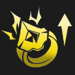
Haute tension
Vous gagnez une Étincelle ionique. Vos Étincelles ioniques ont un rayon augmenté de hexincreasetooltip hexagones et infligent effectincrease% de dégâts bonus.
Vent hurlant
Tous les Mana Per Whirlwind pts de mana que votre équipe dépense, une tornade est invoquée. Cette tornade projette les ennemis en l'air.
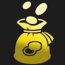
Gredin
Vous ne gagnez plus de PO d'intérêts, mais vous gagnez Round Start Bonus Gold PO au début de chaque manche de combat contre un joueur. Vous gagnez immédiatement Gold Instant PO. Intérêts : les PO bonus que vous gagnez toutes les Old Interest Threshold PO économisées.
Tueur impitoyable
Vous gagnez un Tueur de géants. Les Tueurs de géants gagnent leur amplification des dégâts contre tous les ennemis et non plus seulement contre les tanks.
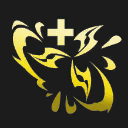
Protection infinie
Vous gagnez immédiatement Gold Amount PO. À la phase Unlock Stage-Unlock Round, vous gagnez une Force de l'infini. La Force de l'infini donne aux alliés sur la même rangée un bouclier de Health Percent% des PV. Championnat de l'Attaque des monstres, 2023
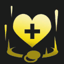
Stratégie d'investissement I
Vos champions gagnent définitivement Max Health Per Interest PV max par PO d'intérêts que vous gagnez. Vous gagnez immédiatement Instant Gold PO.

Eh ouais, c'est moi.
Vous gagnez un projecteur dans le coin inférieur droit. Le champion sous le projecteur gagne Damage Amp Percent% d'amplification des dégâts et Attack Speed% de vitesse d'attaque, et génère Gold To Grant PO toutes les Takedowns Per Gold éliminations. Lore & Legends : Tactician's Crown, 2026
Collectionneur d'objets II
Votre équipe gagne Base HP PV. Pour chaque objet unique qu'elles portent, vos unités gagnent Health PV, AD% de dégâts d'attaque et AP% de puissance bonus.

Extraction d'objet
Les Num Components premières fois que vous sacrifiez un champion dans l'hexagone Ronce-obscure, vous gagnez une copie d'un composant aléatoire qu'il possède. Vous gagnez un Veigar et une Rek'Sai.
Lotus précieux I
Votre équipe gagne Crit Chance_I% de chances de coup critique et Précision. Précision : les dégâts des compétences peuvent infliger un coup critique. La Précision supplémentaire octroie 10% de dégâts de coup critique.
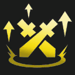
Kahuna
Chaque Num Attackse attaque de vos unités inflige des dégâts bruts bonus équivalents à Percent AD% des dégâts d'attaque de base.
Sentinelles II
Début du combat : vos unités avec des alliés adjacents gagnent un bouclier de Shield Health PV pendant Shield Duration sec. Ce bouclier est cumulable.
Copieur !
Vous pouvez voir votre prochain adversaire. Votre équipe gagne Base Damage Amp% d'amplification des dégâts. Ce pourcentage augmente à Full Damage Amp% si vous et votre adversaire avez activé au moins un type en commun.
Sauvetage in extremis
Quand un allié tombe pour la première fois sous Health Threshold% de ses PV, il récupère Heal Percent% de ses PV max.
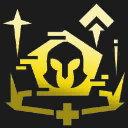
Fin de partie
Vous gagnez XP Gain XP au début des manches de combat contre un joueur. Vos champions à 5 PO gagnent Champ Buff% de PV et Champ Buff% de vitesse d'attaque. Tactician's Crown du set Cyber City, 2025

Légion des trois
Vous gagnez un emblème aléatoire. Vos champions à 3 PO et tous les alliés équipés d'un emblème gagnent Health Max Add PV et Attack Speed Percent% de vitesse d'attaque. Championnat de Jugement, 2021
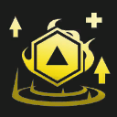
Légion des trois
Vous gagnez un emblème aléatoire. Vos champions à 3 PO et tous les alliés équipés d'un emblème gagnent Health Amount PV et AS% de vitesse d'attaque. Championnat de Jugement, 2021
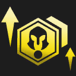
Choristes
Vos champions à 4 PO et 5 PO gagnent health PV et Attack Speed% de vitesse d'attaque pour chaque champion à 1 PO ou 2 PO sur votre plateau. @TFTUnitProperty.item:TFT_Augment_LittleBuddies_Tooltip@
Volonté de la massue
Vous gagnez des Gants d'entraînement. Votre équipe gagne Crit Chance% de chances de coup critique.
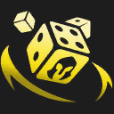
Dés magiques
Lancez 3 dés. Vous gagnez des récompenses en fonction de leur résultat total.
Armure improvisée II
Vos champions sans objet gagnent Armor_Gold d'armure et de résistance magique.
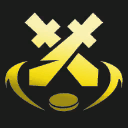
Monétisation malveillante
Vous gagnez Instant Gold PO. Pendant les Duration prochaines manches, les champions ennemis vous octroient Gold Per Enemy PO quand ils meurent.
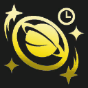
Duplication
Vous gagnez Rerolls relances gratuites de la boutique. Lorsque vous atteignez le niveau Level, vous gagnez Reward Rolls relances de boutique gratuites et un duplicateur de champion. Championnat Galaxies, 2020
Bataille de nourriture
Après End Seconds sec de combat, vos champions gagnent Attack Speed% de vitesse d'attaque. Leurs attaques lancent également Projectile Count délicieux projectiles qui infligent Base Damage pts de dégâts magiques ().
Touche-à-tout
Votre équipe gagne Health PV pour chaque type unique actif. Vous gagnez une Miss Fortune et un Rhaast. @TFTUnitProperty.item:TFT_Augment_Misfits_TotalHealthTooltip@ Les types uniques appartiennent à un seul champion et sont affichés en orange.
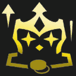
Avidité
Vous gagnez immédiatement Initial Gold PO, puis Gold Per Stage PO au début de chaque phase. Récupérer des PO fait grossir votre Tacticien.
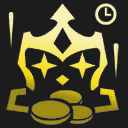
Avidité+
Vous gagnez immédiatement Initial Gold Plus PO, puis Gold Per Stage Plus PO au début de chaque phase. Récupérer des PO fait grossir votre Tacticien.
Étoiles supérieures
Début du combat : Num Units champion à 1 PO aléatoire passe à 3 étoiles pour cette manche et gagne AD Bonus% de dégâts d'attaque et APBONUS% de puissance.
Obstination
Les champions qui se battent dans un combat contre un joueur ne peuvent pas être placés sur le banc ni être vendus. Votre équipe gagne Post Combat Health Boost% de PV et Post Combat Ap Boost% de dégâts d'attaque et de puissance après un combat contre un joueur.

Abri naturel
Les champions qui commencent le combat en étant adjacents à une plante Sylvestre gagnent AS% de vitesse d'attaque et récupèrent heal% de leurs PV max toutes les Heal Interval sec. Vous gagnez un Alistar, un Ornn et une Xayah.
Noble sacrifice
À chaque combat, votre premier allié qui meurt octroie Base Resists + Share Perc% de son armure et de sa résistance magique à vos unités.

Monstre de la Jungle omega
Vous pouvez choisir un deuxième monstre de la Jungle alpha. Vous gagnez un Carapateur, un Rougelin et un Caillou.
Surcharge de PV
Toutes les trois attaques, vos unités infligent Bonus Damage% de dégâts et récupèrent des PV équivalents à Percent Heal% de ces dégâts. L'excédent de soins est converti en un bouclier de jusqu'à Max Shield PV.
Objets de Pandore II
Début de la manche : les objets sur votre banc changent aléatoirement. Vous gagnez Number Of Components II composants aléatoires.
Gagnant-gagnant
Après un combat contre un joueur, vous gagnez XP Bonus Win XP si vous avez gagné ou XP Bonus Lose XP si vous avez perdu.
Brut de décoffrage
Les ennemis subissent des dégâts bruts bonus équivalents à Base Damage% des dégâts qu'ils subissent. Ce bonus augmente de Percent Inc% (jusqu'à Percent Max%) à chaque fois qu'ils subissent des dégâts.
Chapardage
À chaque manche, vous gagnez une copie 1 étoile du premier champion que vous avez tué lors du dernier combat. La première fois que vous récupérez des champions d'une valeur de Gold For Gloves PO au total, vous gagnez des Gants de voleur.
Résistance acharnée
Votre équipe gagne Armor Instant d'armure et de résistance magique. Quand vos unités tombent sous Health Drop Threshold% de leurs PV, le bonus augmente à Threshold Armor Boost Combined jusqu'à la fin du combat.
Forge portative
Choisissez 1 artefact parmi 4. Les artefacts sont des objets plus puissants dotés d'un effet unique.
Préparation II
Les champions sur votre banc gagnent définitivement HP Bonus PV, Stats% de dégâts d'attaque et Stats% de puissance par manche. Cet effet peut se cumuler jusqu'à Max Stacks fois et les champions commencent avec Starting Stacks effet.
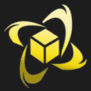
Triomphe
Vous gagnez component composants. Toutes les Wins Needed victoires, vous gagnez un composant.
Mana du protecteur
Vous gagnez un Vœu du protecteur. Les Vœux du protecteur octroient à leur porteur Incoming Mana Increase Percentage% de mana bonus de toutes les sources et Flat HP PV max.
Forge psychique
Au début de la manche, les objets complets des champions sur le banc se transforment en l'un des objets conseillés. Vous gagnez un objet complet aléatoire.
Toujours plus vite II
Votre équipe gagne Base AS% de vitesse d'attaque. Après chaque manche, elles en gagnent Increase Per Round% de plus. (Vitesse d'attaque actuelle : @TFTUnitProperty.item:TFT9_PumpingUp2Rounds@%)
Pyromanie
Vous gagnez un Buff rouge. Vos brûlures infligent Burn Increase% de dégâts bonus.
Boutique fermée
Pour les Num Rounds prochains combats contre un joueur, vous ne pouvez pas utiliser votre boutique. Ensuite, vous gagnez Gold PO et une Enclume à objets complets.

Pluie d'or
Vous gagnez immédiatement Instant Gold PO, puis Round Gold PO à chaque manche.
Pluie d'or+
Vous gagnez immédiatement Instant Gold PO, puis Round Gold PO à chaque manche.
Puissance 4
Le prochain champion à 4 PO que vous achetez avec des PO passe instantanément à 2 étoiles. Vous gagnez Gold PO.
Fabrication en série
Choisissez 1 composant parmi 3. Pendant Number Of Rounds To Grant Loot manches, vous gagnez une copie de ce composant.
Bac de recyclage
Vous gagnez 1 objet complet aléatoire tout de suite, puis 1 composant après Rounds combats contre un joueur. Lorsque vous vendez un champion, ses objets complets sont désassemblés (hors objets du Tacticien et emblèmes).

Bac de recyclage+
Vous gagnez 1 objet complet aléatoire tout de suite, puis 1 composant après Rounds Plus combats contre un joueur. Lorsque vous vendez un champion, ses objets complets sont désassemblés (hors objets du Tacticien et emblèmes).
Compte épargne
Après avoir gagné Gold Required PO d'intérêts, vous gagnez Gold To Gain PO. Vos intérêts max sont augmentés à Interest Cap PO. Vous gagnez immédiatement Gold Now PO. PO gagnées : @TFTUnitProperty.item:TFT_Augment_SavingsAccount_Tracker@
Bouc émissaire
Vous gagnez un Mannequin d'entraînement et Initial Gold PO. À chaque combat contre un joueur, si ce Mannequin d'entraînement est le premier à mourir, vous gagnez Gold PO.
Lutte pour le sommet
À chaque manche, si vous êtes dans les Bottom Half derniers, vos unités gagnent définitivement Loser Boost% de dégâts d'attaque et de puissance. Si vous êtes dans le top Upper Half, elles ont Winning Stat Boost% de PV en plus.
Second souffle II
Après Delay sec de combat, votre équipe récupère Heal Percent% de ses PV manquants.
Bâton angélique
Vous gagnez un Bâton de l'archange. Les Bâtons de l'archange confèrent Mana Per Second régénération de mana supplémentaire si le porteur possède AP Threshold% de puissance ou plus.
Effets secondaires
Lorsqu'un allié récupère des PV, il inflige Heal Conversion Pct% des PV récupérés à sa cible sous forme de dégâts magiques. Toutes les Heal Interval sec, les alliés récupèrent Heal Pct% de leurs PV max.
Tout doit disparaître
Vous gagnez Num Gold PO. Après chaque combat contre un joueur, s'il n'y a aucun objet sur votre banc (hors consommables), vous gagnez No Items XP XP.

Tout doit disparaître+
Vous gagnez immédiatement Num Gold Plus PO et Instant XP Plus XP. Après chaque combat contre un joueur, s'il n'y a aucun objet sur votre banc (hors consommables), vous gagnez No Items XP Plus XP.

Petit compagnon poilu
Lorsque Ami de la forêt est actif, vous obtenez une seconde invocation de votre AMI, mais qui n'a que Effectiveness_Doesnt Include Summon Spell% d'efficacité. Vous gagnez un Teemo, un Veigar et un Kobuko.
Solo Leveling
Pendant les Num Combats prochains combats, votre équipe n'est composée que de Max Team Size champion, mais le champion que vous placez sur le plateau dispose de stats considérablement améliorées. Vous gagnez XP Per Kill XP pour chaque élimination que ce champion effectue. Ensuite, vous gagnez Num Components composants.
Lithoplastron solo
Vous gagnez un Lithoplastron de gargouille. Les alliés portant un Lithoplastron de gargouille gagnent Max Health Percent% de PV max s'ils commencent le combat seuls sur leur rangée.
Volonté de la lance
Votre équipe gagne AD% de dégâts d'attaque et Mana pts de mana. Vous gagnez un BF Glaive et une Larme de la déesse.
Deux de moins
Vous gagnez une Lame enragée de Guinsoo. Après l'élimination de Num Eliminations Required joueurs, vous gagnez Gold Amount PO. Championnat de Destinées, 2021
Régénération fluctuante
Les champions récupèrent Base Regen Bonus% de leurs PV max toutes les Regen Period sec. Ce soin est augmenté de Regen Per Missing HP% tous les 10 PV de Tacticien manquants.
Esprit de la Rédemption
Vous gagnez un Visage spirituel. Toutes les Time Interval Seconds sec, vos Visages spirituels régénèrent Percent Missing Health% des PV manquants des alliés dans un rayon de Hex Range hexagones.

Esprit de la Rédemption
Vous gagnez un Visage spirituel. Toutes les Frequency sec, vos Visages spirituels régénèrent Missing Health% des PV manquants des alliés dans un rayon de Hex Radius hexagone.
Butin de guerre II
Les ennemis ont Loot Drop Chance% de chances de lâcher du butin à leur mort.

Enracinement
Vous gagnez Emblem Amount emblèmes aléatoires et Gold Amount PO.
Enracinement+
Vous gagnez Emblem Amount Plus emblèmes aléatoires, un Reforgeur et Gold Amount Plus PO.
Fabricant de baguettes
Vous gagnez Item Quantity objets complets aléatoires construits à partir d'une Baguette trop grosse.
Des étoiles sont nées
Les premiers champions à 1 et 2 PO que vous achetez passent instantanément à 2 étoiles. Vous gagnez Gold PO.

Soleil et Lune
Vos champions Lunaires gagnent Health PV et Damage Amp% d'amplification des dégâts pour chaque champion Solaire unique déployé. Vous gagnez une Leona, une Kayle et une Diana.

Soleil et Lune+
Vos champions Lunaires gagnent Health PV et Damage Amp% d'amplification des dégâts pour chaque champion Solaire unique déployé. Vous gagnez une Leona, une Kayle et un Aphelios.
Plateau solaire
Début du combat : tous les ennemis sont brûlés et perdent Total Burn Percent% de leurs PV max en Duration sec. De plus, les soins qu'ils reçoivent sont réduits de Grievous Wounds Percent%.
Armurier
Vous gagnez Item Quantity objets complets aléatoires construits à partir d'un BF Glaive.
Électrologie
Chacun de vos alliés ayant Min Items objets équipés émet Num Arcs arcs électriques toutes les Frequency sec, infligeant Stage2 Damage-Stage6 Damage pts de dégâts magiques en fonction de la phase.
Mailles en or
Vous gagnez des Mailles du magnat. Les champions portant des Mailles du magnat occupent Increased Team Size Contribution place de plus dans l'équipe, mais gagnent Bonus Health PV et Bonus Durability% de durabilité. Les Mailles du magnat rapportent des PO en plus des stats de combat. Championnat L'ère des dragons, 2022
Armure couverte d'épines
Vous gagnez une Armure roncière. Vos Armures roncières infligent damageamp1-damageamp4% de dégâts bonus (selon la phase).
Bye bye boutique
Votre boutique est inaccessible pendant les Rounds Skipped prochaines manches. Puis vous gagnez Experience To Add XP.
Pilleur de tombes I
Pour chacun des Num Dead prochains joueurs éliminés, prenez l'un de ses objets complets.

Stats à foison !
Votre équipe gagne Health PV, ADAP% de dégâts d'attaque, ADAP% de puissance, Resists d'armure, Resists de résistance magique, Attack Speed% de vitesse d'attaque et Mana de mana.
Secteur commercial
À chaque manche, vous gagnez une relance gratuite de la boutique. Vous gagnez Num Gold PO.

Secteur commercial+
À chaque manche, vous gagnez une relance gratuite de la boutique. Vous gagnez Num Gold Plus PO.
Chasse au trésor
Vous gagnez un coffre verrouillé lors de chaque phase, à partir de maintenant et jusqu'à la phase Max Num Chests. Vous déverrouillez ce coffre une fois que vous avez dépensé Gold Needed Per Chest PO dans des relances de boutique. Ces coffres restent jusqu'à leur ouverture.
Tiercé I
Vous gagnez numunits champions à Tier PO. Début du combat : Buffed Number champions à Tier PO aléatoires gagnent Health PV et Attack Speed% de vitesse d'attaque.
Avènement des deux
Vous gagnez Free Rerolls relance tous les Unit Count champions à 2 PO uniques que vous avez mis sur le plateau lors du dernier combat contre un joueur. Vous gagnez Num Champs To Grant champions à 2 PO.
Tanks jumeaux
Si vous avez exactement 2 copies d'un champion sur le plateau, ils gagnent Bonus Health PV. Quand l'un d'eux meurt, l'autre gagne un bouclier équivalent à On Death Perc Heal% de ses PV max pendant Heal Duration sec. Quand vous faites passer une unité à 3 étoiles, vous en gagnez une copie 2 étoiles.
Pluie de deux
Vous gagnez un champion 2 étoiles à 2 PO aléatoire et 2 champions 2 étoiles à 1 PO aléatoires.
U.R.F.
Vous gagnez une Spatule. Les champions équipés d'une Spatule ou d'une Poêle à frire gagnent AS% de vitesse d'attaque et Mana Regen de régénération de mana.

Sans rival
Vous pouvez déployer Rengar et Kha'Zix ensemble sans pénalité, et ils obtiennent des bonus lorsque l'autre lance sa compétence. Vous gagnez un Rengar et un Kha'Zix.
Gambit d'Urf
Si vous gagnez votre prochain combat contre un joueur, vous gagnez une Spatule. Si vous perdez votre prochain combat contre un joueur, vous gagnez une Poêle à frire. Vous gagnez immédiatement une Enclume à composants et Gold PO.

Verticalité II
Les champions gagnent ADAP% de dégâts d'attaque, ADAP% de puissance, resists d'armure et resists de résistance magique pour chaque allié partageant un type avec eux.
Honneur du Maître de guerre
À chaque manche, votre équipe gagne Stats% de dégâts d'attaque et de puissance. Cet effet peut se cumuler jusqu'à Max Stacks fois et les champions commencent avec Starting Stacks effet.
Récompenses de guerre
Vous gagnez un champion à 2 PO 2 étoiles. Après avoir infligé Player Damage pts de dégâts à des joueurs, vous gagnez un coffre rempli de champions de coût élevé et des objets.
Fleur de lotus I
Vos unités gagnent Crit Chance% de chances de coup critique et leur compétence peut infliger des coups critiques. Si une compétence inflige un coup critique, le champion récupère Mana On Crit% de son mana en Mana Duration sec.

Service 3 étoiles
La première fois que vous faites passer un champion à 3 étoiles, vous en gagnez une copie à chaque manche jusqu'à la fin de la partie. Vous gagnez davantage de copies lorsque vous faites passer à nouveau ce champion à 3 étoiles. Vous gagnez un Duplicateur de champion mineur et un Duplicateur de champion riquiqui.
Attente récompensée
Vous gagnez un champion à 1 PO aléatoire. Vous gagnez une copie de ce champion au début de chaque manche jusqu'à la fin de la partie.
Mana magique
Vous gagnez un composant aléatoire. Tous les Mana Per Component de mana dépensés par vos champions, vous octroie un composant supplémentaire (maximum : 0/Number Of Components).
Mon arc est vôtre
Vous gagnez un Arc courbe. Votre équipe gagne AS% de vitesse d'attaque.
Prismatique 101
Une aventure exaltante
Vous gagnez trois champions à 2 PO. Si vous faites passer deux d'entre eux à 3 étoiles, vous gagnez un orbe rempli de butin. Vous gagnez un Duplicateur de champion mineur au début des Num Stages prochaines phases. Champions : @TFTUnitProperty.item:TFT_Augment_ExaltedAdventure_Champs@, @TFTUnitProperty.item:TFT_Augment_ExaltedAdventure_Champs2@, @TFTUnitProperty.item:TFT_Augment_ExaltedAdventure_Champs3@.
Pas le choix
Vous passez immédiatement au niveau Level et vous gagnez XP XP. Vous ne pourrez pas choisir vos prochaines optimisations.

Bande de voleurs II
Vous gagnez Amount Of Gloves At Start II Gants de voleur. Après Combats Until Next Reward II combats contre un joueur, vous en gagnez un autre.

Bande de voleurs II+
Vous gagnez Amount Of Gloves At Start II Plus Gants de voleur. Après Combats Until Next Reward II Plus combats contre un joueur, vous en gagnez un autre.
Bande de voleurs II++
Vous gagnez Amount Of Gloves At Start II Plus Plus Gants de voleur. Après Combats Until Next Reward II Plus Plus combats contre un joueur, vous en gagnez un autre.
Repaire du baron
Vous gagnez un objet de tank aléatoire. Après Start Seconds sec de combat, votre équipe gagne Stats% de dégâts d'attaque et de puissance bonus par seconde jusqu'à la fin du combat. TFT Paris Open 2025
Abondance de ceintures
Vous gagnez Num Belts Ceintures du géant. Vos Ceintures du géant octroient Bonus Health Per Belt PV bonus.
Cadeau d'anniversaire
Vous gagnez un champion 2 étoiles et Gold PO chaque fois que vous montez de niveau. Le coût du champion correspond à votre niveau moins Level Diff (coût max : Max Tier PO).
Âme ardente II
Début du combat : votre champion qui a la vitesse d'attaque la plus élevée gagne Ability Power% de puissance et Attack Speed% de vitesse d'attaque. L'effet se répète sur un autre allié toutes les Transfer Duration sec.
Bronze pour la vie II
Votre équipe gagne Damage Amp% d'amplification des dégâts et Armor d'armure et de résistance magique pour chaque type au palier Bronze.

Champion en kit
Vous gagnez un champion aléatoire à Unit Cost PO Actor Level étoile(s). Vous gagnez Num Gold PO.
Champion en kit
Vous gagnez un champion 3 étoiles à 1 PO aléatoire. Vous gagnez Gold PO.

Trésors enfouis
Vous gagnez un composant aléatoire immédiatement et au début des roundsofbonusitems prochaines manches.
Trésors enfouis III
Vous gagnez un composant aléatoire immédiatement et au début des Rounds Duration prochaines manches.
Appel du chaos
Vous gagnez une récompense puissante et aléatoire.

Appel du chaos
Vous gagnez une récompense puissante et aléatoire. Récompense : @TFTUnitProperty.item:TFT11_Augment_CallToChaos@
Bénédiction du gardien
Vous gagnez des objets plus puissants au fil des niveaux. Niveau levelreqa : Enclume à composants Niveau levelreqb : Enclume à objets complets Niveau levelreqc : choisissez 1 objet de la lumière parmi les 5 proposés.
Bénédiction céleste III
Votre équipe gagne Omnivamp III% d'omnivampirisme. L'excédent de soins est converti en un bouclier de jusqu'à Shield Max III PV.
Tentative de comeback
Votre équipe gagne HP Per Missing HP PV et AS Multiply Per Missing HP% de vitesse d'attaque par PV de Tacticien manquant.
Relances régulières
Vous gagnez Init Rerolls relances gratuites immédiatement et Per Turn Rerolls à chaque manche pendant le reste de la partie.
Composants de guerre
Après Number Of Combats combats contre un joueur, vous gagnez 1 exemplaire de chaque composant. Vous gagnez immédiatement un composant aléatoire. @TFTUnitProperty.item:TFT_Augment_MuseumHeist_TooltipTRAKey@ @TFTUnitProperty.item:TFT_Augment_MuseumHeist_CompleteTRAKey@

Quête de composant
Vous gagnez un composant aléatoire et Num Gold PO. Vous gagnez un composant aléatoire différent lors de vos 7 prochaines victoires contre un joueur. Ensuite, vous gagnez Completion Gold PO.
Couronnement
Vous gagnez 1 Couronne du Tacticien. La Couronne du Tacticien, la Cape du Tacticien et le Bouclier du Tacticien octroient à leur porteur Attack Speed% de vitesse d'attaque, Attack Damage% de dégâts d'attaque et Ability Power% de puissance.
Couronne maudite
La taille max de votre équipe augmente de Max Army Size Increase et votre équipe gagne Durability Bonus% de durabilité, mais vous perdez le double de PV de Tacticien quand vous perdez un combat contre un joueur.
Liaison cybernétique III
Vos alliés équipés d'un objet gagnent Health PV et Mana Regen de régénération du mana. Vous gagnez une Larme de la déesse.
Lames tueuses
Vous gagnez une Lame funeste. Les Lames funestes gagnent Attack Damage Percent% de dégâts d'attaque de manière permanente à chaque fois que leur porteur participe à une élimination.
Coiffes mortelles
Vous gagnez une Coiffe de Rabadon. Les Coiffes de Rabadon octroient Mana Gen de régénération de mana et Ability Power Percent% de puissance de manière permanente à chaque fois que leur porteur participe à une élimination.
Coup de chance II
Vous gagnez Item Count Coffres chanceux, un Suppresseur magnétique et Gold PO. Placez un Coffre chanceux sur un champion pour choisir parmi une armurerie d'objets recommandés.
Lancer de dés
Maintenant et au début des Num Stages prochaines phases, vous lancez 3 dés. Vous gagnez diverses récompenses en fonction du résultat total.
Ascension finale
Vos unités gagnent +damageamp% d'amplification des dégâts. Après delay sec, ce bonus augmente à +Ascended Amp TOOLTIPONLY% d'amplification des dégâts.
Emblématique
Vous gagnez 1 emblème aléatoire. Au début de chaque phase, vous gagnez un emblème aléatoire. Votre équipe gagne Health PV par emblème qu'elles portent.
Artefacts à la rescousse
Vous gagnez Initial Artifacts artefact aléatoire. Lorsque vous tombez sous Health PV de Tacticien, vous gagnez More Artifacts autre artefact aléatoire, More Completed Items objet complet aléatoire, et More Components composant aléatoire. Championnat de Mega Remix, 2023

Artefacts à la rescousse
Vous gagnez Num Artifacts artefact aléatoire. Lorsque vous tombez sous Health Threshold PV, vous gagnez Num More Artifacts autres artefacts aléatoires. Championnat de Mega Remix, 2023
Grandeur et démesure
Votre équipe devient grande, les unités gagnent Flat Health PV et Health Multiplier% de PV max.
Expérience à tout prix
Vous ne pouvez plus gagner de PO d'intérêts. Vous gagnez immédiatement Gold Instant PO. Début de la manche : vous gagnez Round Start Bonus Xp XP. Intérêts : les PO bonus que vous gagnez toutes les Old Interest Threshold PO économisées.
Pile ou face
Vous gagnez Gold PO et jouez à pile ou face. Si vous tombez sur face, vous gagnez un Coffre chanceux de la lumière. Si vous tombez sur pile, vous gagnez Num Anvils Enclumes à objets complets.

Pile ou face+
Vous gagnez Gold PO et jouez à pile ou face. Si vous tombez sur face, vous gagnez un Coffre chanceux de la lumière. Si vous tombez sur pile, vous gagnez Num Anvils Enclumes à objets complets.

Pile ou face++
Vous gagnez Gold PO et jouez à pile ou face. Si vous tombez sur face, vous gagnez un Coffre chanceux de la lumière. Si vous tombez sur pile, vous gagnez Num Anvils Enclumes à objets complets.
Typologie
Vous gagnez un emblème aléatoire. Maintenant et au début de chaque phase, vous gagnez un champion 1 étoile de ce type, d'un coût équivalent à la phase (max 5) et 3 PO.

Spéculation
Vous gagnez Instant Gold PO. Vos intérêts max sont augmentés à 10 PO.
Spéculation+
Vous gagnez Gold PO. Votre maximum d'intérêts est augmenté à Interest Cap PO. Intérêts : les PO supplémentaires que vous gagnez toutes les 10 PO économisées.
Tenir le front
Les champions sur les 2 dernières rangées gagnent Ability Power Pcnt Per Front Liner% de puissance et Attack Damage Pcnt Per Front Liner% de dégâts d'attaque pour chaque champion placé sur la première rangée au début de combat.

Investissement+
Vous gagnez 26 PO. Au début de chaque manche, vous gagnez 1 relance de boutique toutes les 10 PO au-dessus de 50 (max 80 PO).
Investissement++
Vous gagnez 45 PO. Au début de chaque manche, vous gagnez 1 relance de boutique toutes les 10 PO au-dessus de 50 (max 80 PO).
Stratégie d'investissement II
Vos champions gagnent définitivement Max Health Per Interest PV max par PO d'intérêts que vous gagnez. Vos intérêts max sont augmentés de Max Interest Inc. Vous gagnez immédiatement Instant Gold PO.
Lotus précieux II
Votre équipe gagne Crit Chance_II% de chances de coup critique, Crit Damage_II% de dégâts de coup critique, et Précision. Précision : les dégâts des compétences peuvent infliger un coup critique. La Précision supplémentaire octroie 10% de dégâts de coup critique.
Niveau supérieur !
Lorsque vous achetez de l'XP, vous en gagnez Additional XP de plus. Vous gagnez Instant XP XP immédiatement.
Forgeron ambulant
Vous gagnez immédiatement une Enclume à artefacts, puis une autre tous les Round Counter combats contre un joueur.

Gants porte-bonheur
Gants de voleur donnera toujours des objets idéaux à vos champions. Vous gagnez Start Sparring Gloves Amount Gants d'entraînement et gold PO.
Gants porte-bonheur+
Gants de voleur donnera toujours des objets idéaux à vos champions. Vous gagnez Start Sparring Gloves Amount Gants d'entraînement, puis vous en gagnez un autre après Combats Until Next Reward Plus combats contre un joueur.
Abonnement premium
Vous gagnez un pack contenant un champion à 1 Star Cost PO, un champion 2 étoiles à 2 Star Cost PO et Gold PO. Vous gagnez ce pack au début des Stages prochaines phases.

Maîtresse des origines
Ouvrez une armurerie et choisissez 1 type parmi Armory Choices. Vous gagnez une Lux avec ce type et une Lance de Shojin. Les types actifs sur votre plateau ont davantage de chance d'apparaître dans l'armurerie. Lux octroie +2 au type choisi.
Suppresseur doré
Vous gagnez un Suppresseur d'objet doré et 4 composants aléatoires.
Pluie d'argent
Vous gagnez Gold Per Round Monsoon PO immédiatement et à chaque manche pendant le reste de la partie.

Enclumes imbriquées
Vous gagnez une Enclume à artefacts. Après l'avoir ouvert, vous gagnez une Enclume à composants. Après l'avoir ouvert, vous gagnez Gold PO.

Enclumes imbriquées+
Vous gagnez une Enclume à artefacts. Après l'avoir ouvert, vous gagnez une Enclume à composants. Après l'avoir ouvert, vous gagnez Gold PO.

Poupées russes
Lorsqu'un champion meurt au combat, une copie de celui-ci est invoquée avec un niveau d'étoile inférieur et Health Multiplier% de PV. Vous gagnez Num Rerolls relances gratuites.

Nouvelle recrue
La taille de l'équipe augmente de Max Army Size Increase et vous gagnez Num Units champion à 4 PO.
Nouvelle recrue+
La taille de l'équipe augmente de Max Army Size Increase et vous gagnez Num Units champions à 4 PO.
9 vies
Vos PV de Tacticien actuels et max sont désormais de Number Of Lives. Lorsque vous perdez un combat, vous ne perdez que Health Loss PV et vous gagnez du butin. Vous ne pouvez pas gagner de PV.

Buffs à gogo
Vous gagnez un Buff rouge, un Buff bleu et un Duplicateur de champion.
Buffs à gogo
Vous gagnez un Buff rouge, un Buff bleu et un Duplicateur de champion.
Objets de Pandore III
Début de la manche : les objets sur votre banc changent aléatoirement. Vous gagnez Number Of Radiant Items III objet de la lumière.
Destin prismatique
Vous gagnez une optimisation de palier Prismatique aléatoire et Gold PO.

Destin prismatique+
Vous gagnez une optimisation de palier Prismatique aléatoire et Gold PO.
Ticket prismatique
Chaque fois que votre boutique est relancée, vous avez Prismatic Chance% de chances de gagner une relance gratuite.
Star du show
Vous gagnez une optimisation de champion à 1 PO aléatoire. Après Turn Delay manches, vous gagnez une copie du champion au début de chaque manche.
Toujours plus vite III
Votre équipe gagne Base AS% de vitesse d'attaque. Après chaque manche, elles en gagnent Increase Per Round% de plus. (Vitesse d'attaque actuelle : @TFTUnitProperty.item:TFT9_PumpingUp3Rounds@%)
Qualité avant quantité
Les champions portant 1 seul objet l'améliorent en sa version de la lumière. Les champions portant des objets de la lumière gagnent Bonus Health% de PV. Vous gagnez Num Removers Suppresseurs magnétiques. Les Gants de voleur comptent pour plusieurs objets.
Vaurien de la lumière
Vous gagnez des Gants de voleur de la lumière. Cet objet vous équipe de 2 objets de la lumière aléatoires à chaque manche.
Réfracteur de lumière
Vous gagnez une Amélioration en chef-d'œuvre et anvils Enclume à composants. L'Amélioration en chef-d'œuvre transforme un objet en son équivalent de la lumière !
Reliques de la lumière
Choisissez 1 objet de la lumière parmi les 5 proposés. Vous gagnez un Suppresseur magnétique.
Justice critique
Vous gagnez Num Items To Grant Mains de la justice. Les alliés équipés d'une Main de la justice gagnent Précision et Critical Strike Chance% de chances de coup critique. Précision : les dégâts des compétences peuvent infliger un coup critique. La Précision supplémentaire octroie 10% de dégâts de coup critique.
Essence des Luminécailles
Vous gagnez des Mailles du magnat. Après Number Of Rounds To Wait combats contre un joueur, vous gagnez une Lame du parieur.
Shopping intensif
Quand vous gagnez un niveau, vous gagnez un nombre de relances gratuites de la boutique équivalent à votre niveau + Bonus Roll Per Level. Vous gagnez Gold Gain PO.
Éveil de l'âme
Début du combat : votre équipe gagne Combat Start Ad Boost% de dégâts d'attaque et de puissance par seconde pendant Num Repeats After Initial Application sec. Au max d'effets cumulés, elles infligent True Damage% de dégâts bruts bonus.
Butin de guerre III
Les ennemis ont Loot Drop Chance% de chances de lâcher du butin à leur mort.
Kit de départ
Vous gagnez un champion à 4 PO, un champion 2 étoiles à 1 PO qui partage un type avec lui et Gold PO. Au début des Future Champion Count prochaines phases, vous gagnez de nouveau ce champion à 4 PO.
Abonnement
Maintenant et au début de chaque phase, vous ouvrez une boutique de 4 champions uniques à 4 PO et vous gagnez Gold Per Stage PO.
Objets blindés
Vous gagnez une Enclume à artefacts. Votre équipe gagne Bonus Health PV par objet équipé sur les champions.
Abondance de glaives
Vous gagnez Num BF Swords BF Glaives. Vos BF Glaives octroient Attack Speed Per Sword% de vitesse d'attaque.
Stats à foison !
Votre équipe gagne Health PV, ADAP% de dégâts d'attaque, ADAP% de puissance, Resists d'armure, Resists de résistance magique, Attack Speed% de vitesse d'attaque et Mana de mana.
Cuisine du Tacticien
Vous gagnez un emblème aléatoire. Après Rounds manches, vous gagnez une Cape du Tacticien.
Œuf d'or
Vous gagnez un œuf d'or qui éclot dans Rounds tours et octroie une énorme quantité de butins. Gagner un combat contre un joueur réduit le délai d'éclosion d'un tour supplémentaire.

Emblématiquement
Vous gagnez Emblem Amount emblèmes aléatoires et Gold Amount PO.
Emblématiquement+
Vous gagnez Emblem Amount Plus emblèmes aléatoires, un Reforgeur et Gold Amount Plus PO.
Mini-Tacticien
Vous récupérez Heal PV de Tacticien et gagnez Gold PO après chaque combat contre un joueur. Votre Tacticien se déplace aussi plus vite. Vous gagnez immédiatement Initial Gold PO.
Petits mais costauds
Votre équipe devient petite et gagne Attack Speed% de vitesse d'attaque et de vitesse de déplacement.
Pilleur de tombes II
Vous gagnez Num Initial Items Enclume à objets complets. Chaque fois qu'un joueur est éliminé, prenez l'un de ses objets complets.
Croissance typique
Vous gagnez un emblème aléatoire. Après avoir déployé Lowest Trait Breakpoint types non uniques lors d'un combat contre un joueur, vous gagnez une récompense. Vous augmentez ensuite le nombre de types nécessaires et l'importance de la récompense.
Tiercé II
Vous gagnez numunits champions à Tier PO. Les alliés gagnent Team Attack Speed% de vitesse d'attaque. Début du combat : Buffed Number champions à Tier PO aléatoires gagnent Health PV et Attack Speed% de vitesse d'attaque.
Puissance infinie
Vous gagnez une Dent de Nashor, un Gantelet précieux, une Baguette trop grosse et un Suppresseur magnétique. Ces objets fonctionnent très bien avec les carrys magiques.
Ascension sociale
L'XP coûte Reduced XP Cost PO de moins. Vous gagnez Health On Level Up PV et Rerolls On Level Up relance gratuite chaque fois que votre niveau augmente.
Besace d'Urf
Vous gagnez Num Spats Spatule, Num Components composants aléatoires et Gold PO.

Verticalité III
Les champions gagnent ADAP% de dégâts d'attaque, ADAP% de puissance, resists d'armure et resists de résistance magique pour chaque allié partageant un type avec eux.
Abondance de baguettes
Vous gagnez Num Rods Baguettes trop grosses. Vos Baguettes trop grosses octroient Attack Speed Per Rod% de vitesse d'attaque.
Fleur de lotus II
Vos unités gagnent Crit Chance% de chances de coup critique et leur compétence peut infliger des coups critiques. Si une compétence inflige un coup critique, le champion récupère Mana On Crit% de son mana en Mana Duration sec.
Partage emblématique
Vous gagnez un emblème aléatoire et une Enclume à objets complets. Les alliés qui partagent un type avec cet emblème gagnent Attack Speed% de vitesse d'attaque. 0 0 Tactician's Crown d'Into the Arcane, 2025
Sauter une classe
Lorsque vous atteignez le niveau 9, vous passez immédiatement au niveau 10 et vous gagnez Reroll Count relances de boutique. Vous gagnez immédiatement Instant XP XP.
Dépense réfléchie
Vous ne pouvez plus acheter d'XP. Chaque fois que vous dépensez des PO pour relancer votre boutique, vous gagnez XP XP. Vous gagnez immédiatement Gold PO.
Attente récompensée II
Vous gagnez 2 copies d'un champion à 2 PO aléatoire. Vous gagnez une copie de ce champion au début de chaque manche jusqu'à la fin de la partie.